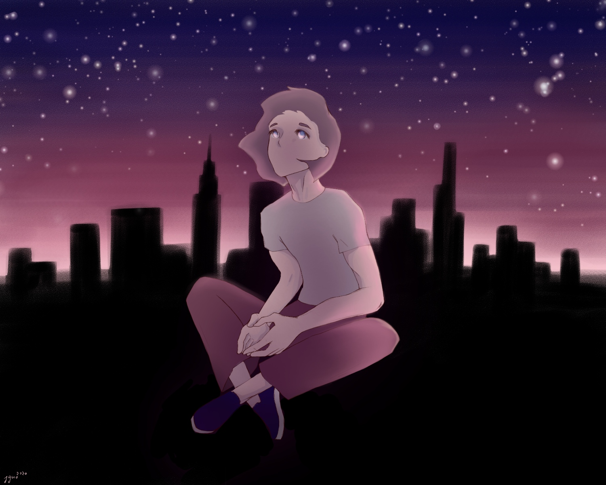
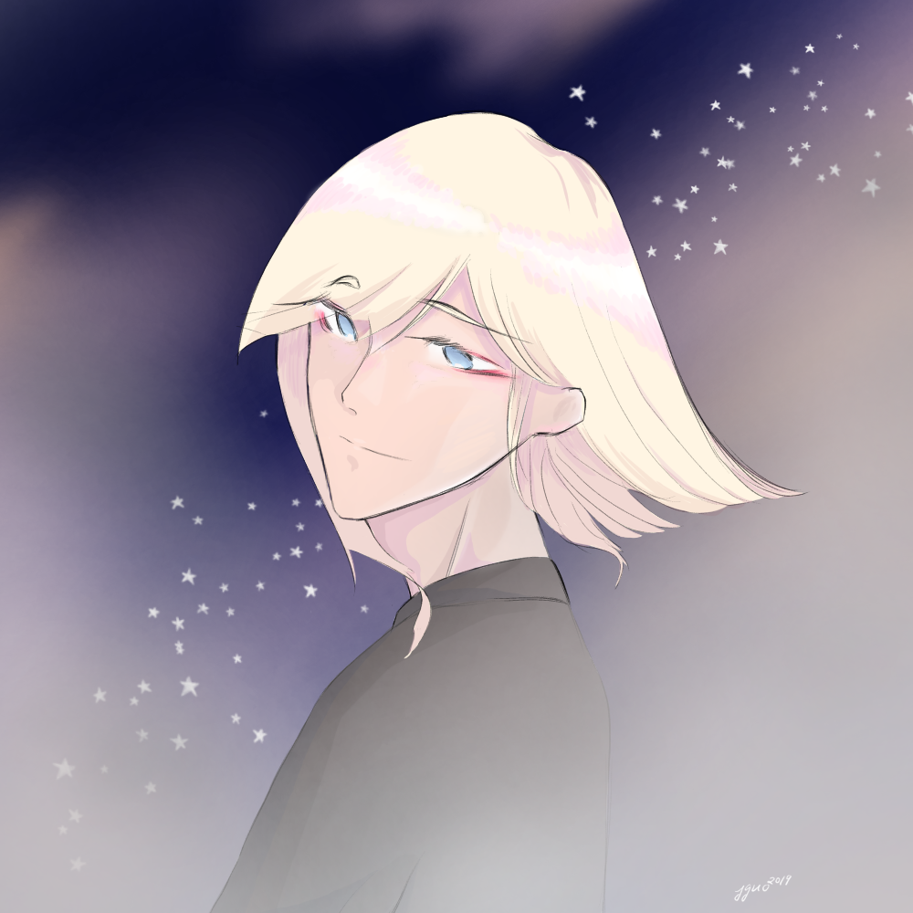
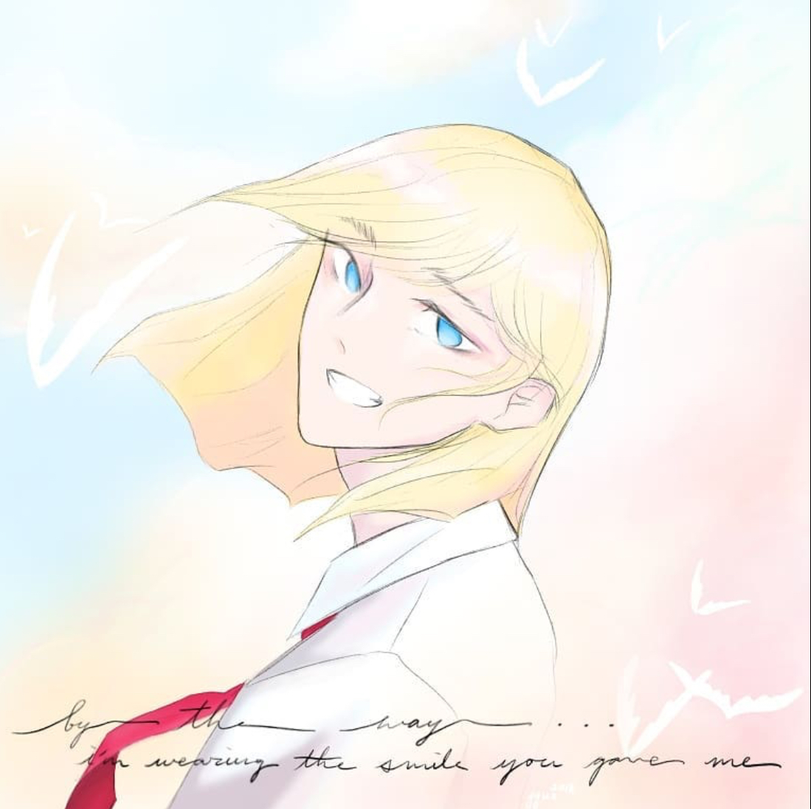
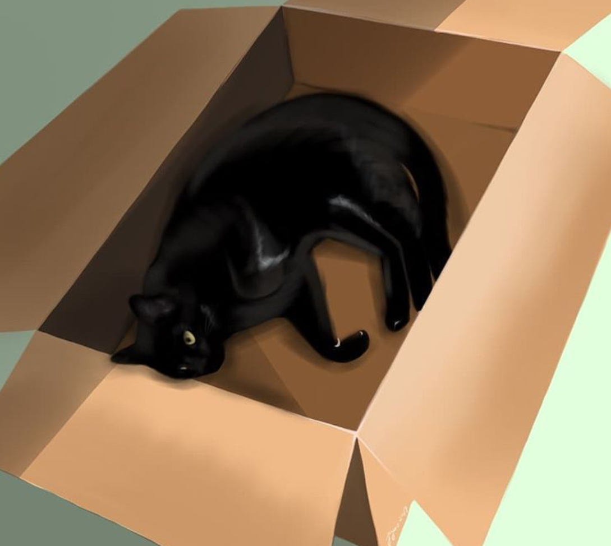
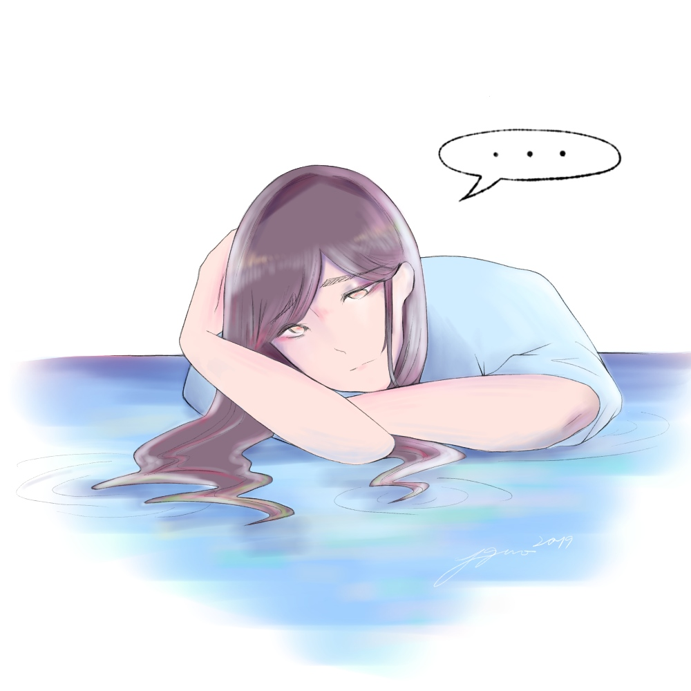
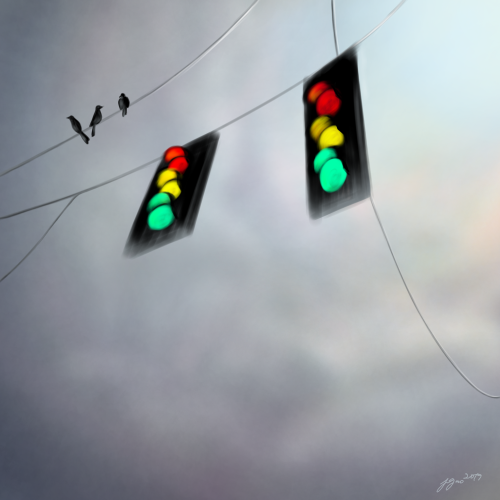
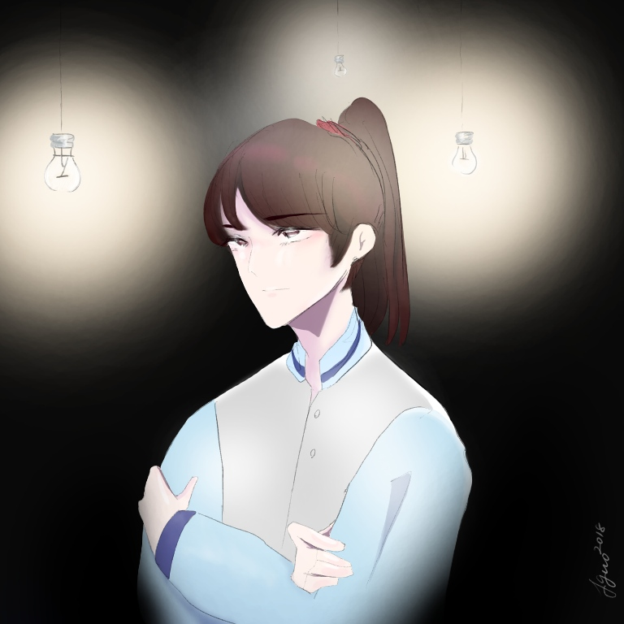
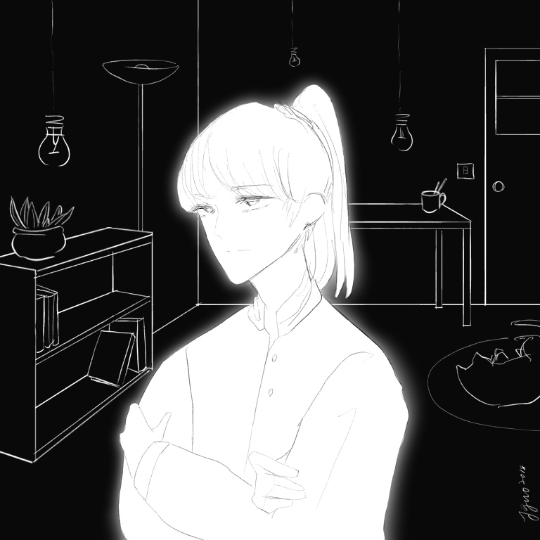

SECTION I: Sky
“There is one spectacle grander than the sea, that is the sky; there is one spectacle grander than the sky, that is the interior of the soul.”
-Victor Hugo, Les Misérables

"Look Up"
Made with IbisPaintX, on iPad
I found myself at a point in my life where I was displaced from everything familiar to me and distanced from everyone that I knew. However, the physical distance did not necessarily mean an emotional distance. Though far from my friends and loved ones, I held them close in my mind and heart. In my new setting, I met new people who I cherished, and I built new relationships. Whether they be far or near, I feel close with the people who matter most to me in life, and this drawing serves as a reminder of that. This drawing served as a reminder to myself that distance does not divide us. Though oftentimes, we may find ourselves alone, we all look up towards the same sky.

"Good Night"
Made with IbisPaintX, on iPad
Good night. Those two words held more meaning to me than I had anticipated. Receiving them was a bit of wholesomeness amidst nights spent too caught up in stress or where my mind was too overactive. And, on the nights that felt warm and right, receiving them served as a last reason for me to smile before I fell asleep. On the flip side, for me, saying those words to someone is an attestment that they are the last thing on my mind before I head off to bed.

"btw i'm wearing the smile you gave me"
Made with IbisPaintX, on iPad
In the daylight, many things become clear. Silhouettes take shape. Shapes are filled with color. Life as we know it makes a little more sense. One thing that is clear as day itself is that you make me happy. “You”, in this context, has changed once or twice since I made the first version of this piece back in 2016. But in all contexts, this person has been one that has inspired me and who has given me a reason to smile more.
SECTION II: s e m i - Realism
“True realism consists in revealing the surprising things which habit keeps covered and prevents us from seeing.”
-Jean Cocteau

"Cat in a Box"
Made with IbisPaintX, on iPad
I asked someone for art inspiration, and he just sent back a picture of his cat lying in a box. Though one can draw many conjectures as to a deeper meaning for this picture, in truth, this was merely one moment in life that I was privileged enough to be let in on.
"Iceland"
Made with IbisPaintX, on iPad
The same amazing individual that inspired me for the earlier cat drawing went on a trip to Iceland sent me pictures of the scenery there. The scenery itself was a work of art long before I decided to draw it, but nevertheless I wanted to draw it and share the beauty with others.
"Sweet Mao"
Made with IbisPaintX, on iPad
I went to Maokong, Taiwan, a number of years ago. One of the most memorable things about the trip was an ice cream with a cat-shaped biscuit that they sold. The shop was at the top of a mountain, and it could be reached by a scenic gondola ride up. This treat was short and sweet, but I enjoyed it enough to share it through art.
SECTION III: Loose Ends
“Life doesn't have plots and subplots and denouements. It's just a big collection of loose ends and dangling threads that never get explained.”
-Grant Morrison

"Melancholy"
Made with IbisPaintX, on iPad
One feeling that I am unable to shake at times is melancholy. Melancholy comes and goes at odd times, and oftentimes I cannot pinpoint the reason why it appears. Perhaps it exists as a shadow in wake of nostalgia, or perhaps it permeates the fabric of our lives like a drop blue dye accidentally spilled. Whatever the case may be, the feeling is bittersweet and raw and enigmatic to me.

"Traffic Lights"
Made with IbisPaintX, on iPad
One thing that amazes me more than it should is traffic lights. They govern the movement of people in a way that is often overlooked. When the lights fail, drivers and pedestrians grow more cautious and unsure. Growing up with their existence, a world without traffic lights seems so incomprehensible to me. In a world lacking the constructs that we have grown up with, it is easy to crash.


"douse the lights"
Made with IbisPaintX, on iPad
We put on a semblance of how we want to be seen. The things we hide may be physical. Yet equally likely, they could be things that exist in our minds— our insecurities, our old memories, our mannerisms and habits and personality traits that we wish to leave behind. We may feel that leaving those things in the dark is for the best, but after dwelling in the dark for too long, our eyes will adjust.